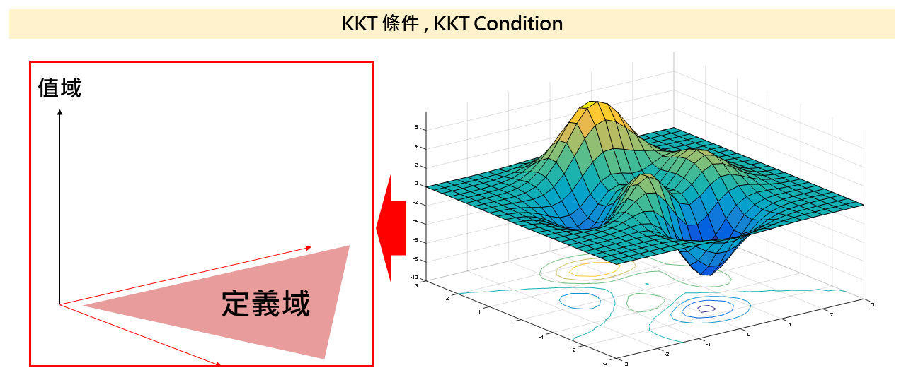
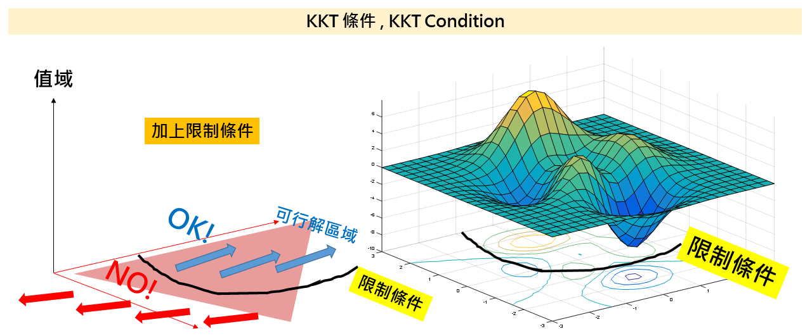
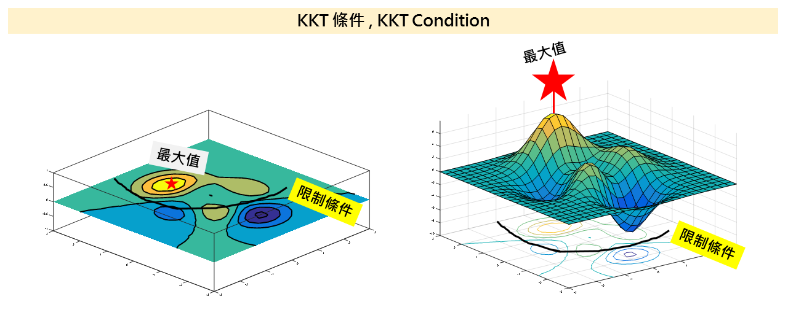
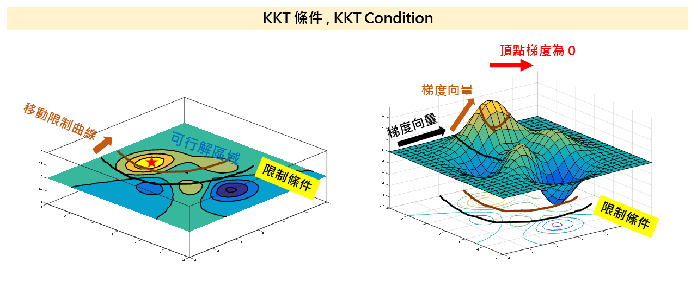
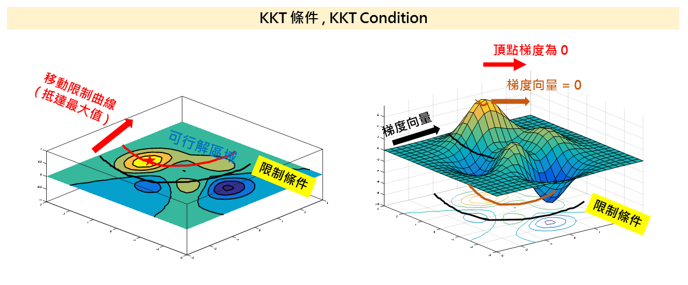
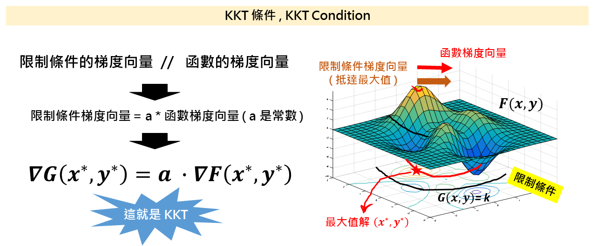
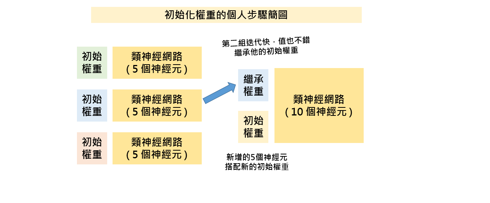

KKT條件於初始化權重之應用
前面將會花費很大時間講解 KKT ，初學者到此就OK，再進階的可以看後方的初始化權重的應用
KKT條件不是什麼特別的數學，你可以簡單理解成拉格朗日乘數法的推廣，在連續數學（也就是微積分、梯度下降法那種數學）KKT條件在優化理論中扮演一個重要腳色，KKT條件特別在機器學習領域中應用於SVM上面，因為SVM要最小化的誤差的方法有很多種，但是對於類神經網路搭配啟發式演算法，我們的目標函數建構當然也可以借重這個優化方法，那我們會應用在哪裡呢？那就是在初始化權重的挑選。
為什麼初始化權重很重要？因為如果我們能初始化權重在比較接近我們最終求得的解附近，最關鍵就是能減少我們訓練的時間，在做類神經網路的時候一定要有個概念，我們的資源十分珍貴，這個資源除了你的腦袋瓜子的知識，還有就是你應用知識出來得到結果所要耗費的時間，如果你想出一個絕佳的訓練方法，但是在一定計算能力下別人算三分鐘，你卻要算一週，這就會讓你的這個演算法的重要性下降，我常常以為你訓練類神經網路的時間，就是魔法師念咒語的時間，念咒語越久敵人就打過來啦，魔法還沒施出去你就被打死了。
KKT條件 KKT Condition
考慮一個函數 F(x,y) 就像下右圖一樣的一個曲面，他在黃色區域有極大值，這邊可以注意到 X-Y 平面是我們的函數的定義域，值域是 Z 軸ｚ方向。

由於許多現實的考量，我們這個函數有一個限制條件，這就像是我們高中學的線性規劃一樣，我們有一個限制式，在這個限制式下我們會有兩個區域，一塊是藍色的可行解區域，紅色是被限制住，定義域不能是這些值，如下圖：

在限制式底下我們能透過上帝視角看到最大值仍然存在於我們的限制條件內，下右圖在函數上以紅色星星可以看到最大值，如果我們把值域攤出來，可以看到左圖的紅色星星處也標記了最大值的定義域解，我們就是要想辦法找到他，而這個辦法我們會借助 KKT 條件。

現在我們開始在定義域移動我們的限制條件式，實際上就和高中學的一樣，我們【移動的限制條件式當作我們的目標函數】，你可以在下方左圖看到軌跡（黑色到深黃色）也可以下右圖看到曲線移動過程中，對應到函數值曲線，這邊要特別注意到的是，我把梯度向量標了出來，你可以看到我們的限制曲線移動過程中，他的梯度向量的變化。
這邊要特別留意，當我移動限制式到最大值的時候，那個最大值點的梯度向量是 0 ，目前考慮的是連續函數的一個情況。 
當我移動限制曲線到最大值的時候，我們限制條件的梯度向量也會是 0 ，和頂點梯度向量一樣。 
這邊我們就可以得到 KKT 條件了，什麼意思呢？簡單來說就是如果我今天有一個限制條件，限制條件的梯度向量會和函數梯度向量平行的話，我們基本上就是找到了一個局部最大值∕最小值，而這就是所謂的 KKT 條件。

初始化權重優化
考慮一個目標函數（或配適函數、Loss Function）如下：
$$ Min\ loss =\min_{w}\left \{\ \lambda \left \| \ weight \ \right \| ^2 + MSE\ \right \} $$
這是一個我們常見的配適函數，我們除了希望能把 MSE 降到最小之外，我們也希望能讓權重的值不要太大，這中間有一個 lambda 的比例關係，讓我們不要過度的追求 MSE 最小或權重最小。這邊是一個比較簡單的描述，考慮的是輸出層的權重，透過簡單加權平均得到類神經網路的計算值，暫時不考慮 softmax 做簡單的示範，看得懂的話 softmax 也會做的。
假如我們考慮初始化權重也不能離我們最終的權重太遠，我們可以這樣設定：
$$ \min_{w}\left \{\ \lambda \left \| \ weight \ \right \| ^2 + \mu \left \| \ weight - init\ weight \ \right \| ^2 + MSE\ \right \} $$
稍微用比較正式的縮寫寫法：
$$ \min_w \left \{\ \lambda \left \| \ w\ \right \| ^2 + \mu \left \| \ w - w_{0} \ \right \| ^2 + MSE \ \right \} $$
同樣道理，我們多了一個 w0 代表初始化權重，我們希望最終權重距離我們的初始化權重不要太遠，所以有一項 w - w0 ，而 mu 是來衡量初始化權重在訓練中佔的重要程度，這當然是相對於權重與MSE的一個參數。
你可能會說不對呀！初始化權重不是一開始就確定了，這不就是一個固定常數？你這樣想沒錯，但這個前提是你只訓練一次、而且一次只訓練一組。一般常見初始化權重優化的應用場景，都是在熱啟動的環境，例如我的類神經網路是要會不斷有新的資料進來要一直重新訓練，由於資料可能越來越多（或是資料從起初的不均衡越來越均衡、或是訓練的標籤資料越來越多樣化）都可能增加訓練的時間，為了讓訓練時間能固定，才能好配合其他也要訓練的神經網路的時程，不要造成班表大亂，初始化權重優化的重要性才會這麼高。

對我來說一開始我可能會用隨機產生初始化權重，然後先跑十組類神經網路，搭配比較少的隱藏層的神經元，得到十個訓練完的網路，然後從這十個網路我可能會挑五個訓練過程比較好的，用他們五個的初始化權重再去訓練更多的神經元，或是訓練更大量的訓練資料（事實上，我有時候也會把神經元個數放到配適函數裡面求最小）。
我們怎麼用 KKT 條件呢？最主要就是要把我們的配適函數中的 w 去掉，變成只有 w0 ，這樣子我們就能拿著只有 w0 的配適函數來作為初始化權重衡量的標準。
TODO：KKT 條件應用於初始化權重的證明（已打但還沒整理上來QQ）